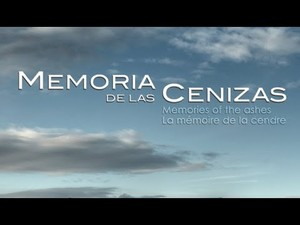

Memoria Histórica - La web de emijrp
{kind=link}
Sección dedicada a la Memoria Histórica. Al recuerdo de todas aquellas personas que lucharon contra el fascismo, para defender la República y la Democracia, dándolo todo por construir un mundo mejor en definitiva. Para que su rostro y su nombre no se borren de la Historia.
| Tabla de contenidos |
|---|
|
1. Documentales 2. Historiadores e investigadores 3. Turismo Rojo 4. Víctimas del fascismo 5. Otros 6. Enlaces externos |
Documentales
Artículo principal: Documentales de Memoria Histórica
Esta es una recopilación de los documentales de memoria histórica que he ido encontrando. Gran parte de ellos han sido subidos a Internet por sus propios directores o productoras. Es el caso de Intermedia Producciones con Presos del silencio (2004), La Partida (2007), La madre sola (2010), Memoria de las cenizas (2012) y Guillena 1937 (2013); de Sintregua Producciones con Cicatrices de piedra (2006) y Aragoneses en el infierno (2010); y también del Servicio de Vídeo de la Diputación de Cádiz con Vida de Luis Vega. Memoria de Paterna (2017) y Murieron cantando (2018) entre otros.
|  Memoria de las cenizas |
 Vida de Luis Vega. Memoria de Paterna |
 Guillena 1937 |
Puedes ver muchos más en:
- Lista de documentales sobre memoria histórica en 15Mpedia
- Lista de reproducción de documentales de memoria histórica en YouTube
Historiadores e investigadores
Estos son algunos historiadores e investigadores acerca de la memoria histórica, en su mayor parte centrados en la provincia de Cádiz:
- Manuel Almisas Albéndiz
- Alicia Domínguez Pérez
- José Luis Guitérrez Molina
- Santiago Moreno Tello
- Fernando Romero Romero
Turismo Rojo
Artículo principal: Turismo Rojo
Se trata de un turismo enfocado a lugares, monumentos, calles y otros puntos de interés que tengan que ver con la memoria histórica, el socialismo/comunismo y el movimiento obrero. La información disponible es escasa y muy dispersa.
Víctimas del fascismo
- Lista de personas fusiladas por el franquismo
- Las Trece Rosas
- Personas fusiladas por el franquismo en el Cementerio del Este de Madrid
- Lista de fosas comunes del franquismo
- Lista de bases de datos de víctimas del franquismo
- Lista de víctimas españolas del nazismo
Otros
- 46º Regimiento "Taman": unidad de aviación soviética formada íntegramente por mujeres. Su trabajo consistía en llevar a cabo bombardeos de hostigamiento y precisión sobre los convoyes, fortificaciones, maquinaria y unidades del ejército nazi.
Enlaces externos
- Federación Estatal de Foros por la Memoria*
- Memoria Histórica CNT
- Memoria y Libertad*
- Proyecto HISMEDI*
Archivos
Asociaciones y colectivos
- Amicale de Mauthausen
- ARMH Alto Palancia
- ARMH Aragón*
- ARMH Burgos*
- ARMH Cataluña*
- ARMH Extremadura
- Comisión Cívica de Alicante para la recuperación de la memoria histórica!
- Foro por la Memoria de Segovia*
- Foro por la Memoria Histórica de Málaga*
- Grup per la Recerca de la Memòria Històrica de Castelló
Brigadas Internacionales
- Asociación de Amigos de las Brigadas Internacionales
- Centro de Estudios y Documentación de las Brigadas Internaciones
Deportados
Exilio
Maquis
Otras
Nota: Las que tienen un asterisco (*) tienen más enlaces para explorar. Las que tienen una exclamación (!) parecen caídas o desaparecidas.
 |
Esta página fue modificada por última vez el 2018-10-30 12:24:50 (UTC) | GitHub pages |